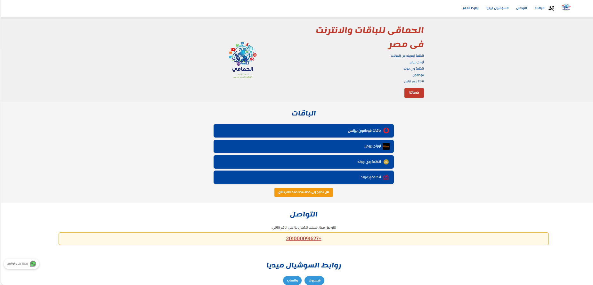
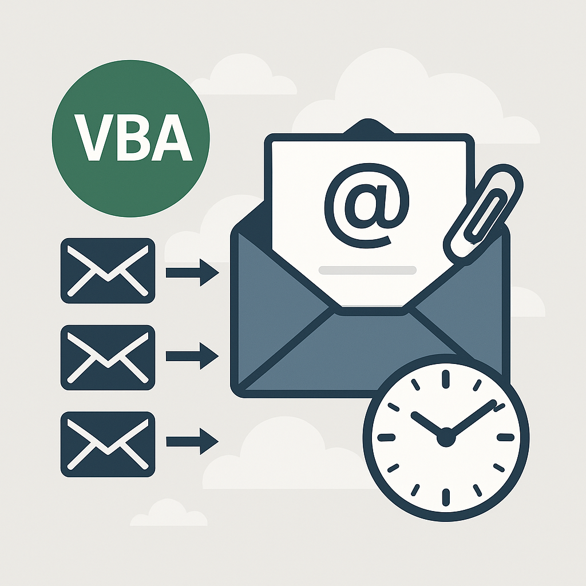

موقع الحماقي لخدمات الإنترنت | Baqat
موقع إلكتروني بسيط يعرض منتجات بطريقة جذّابة. صممته باستخدام HTML و CSS واهتممت بتجربة المستخدم والتصميم المتجاوب.
زيارة الموقع

نظام أتمتة مراسلات
يقوم الكود بالرد على جميع المستلمين في البريد الإلكتروني (Reply All)، مع الاحتفاظ بجميع المرفقات الأصلية لتسهيل عملية الرد وعدم فقدان أي ملفات، كما يضيف تأخيرًا تلقائيًا قدره 12 دقيقة قبل الإرسال، لمنح المستخدم الوقت الكافي لمراجعة الرسالة قبل إرسالها نهائيًا..
تحميل مباشر